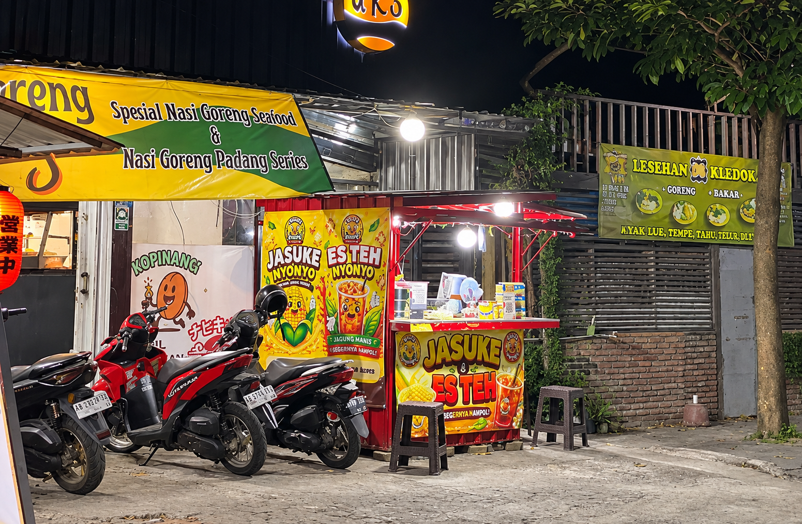
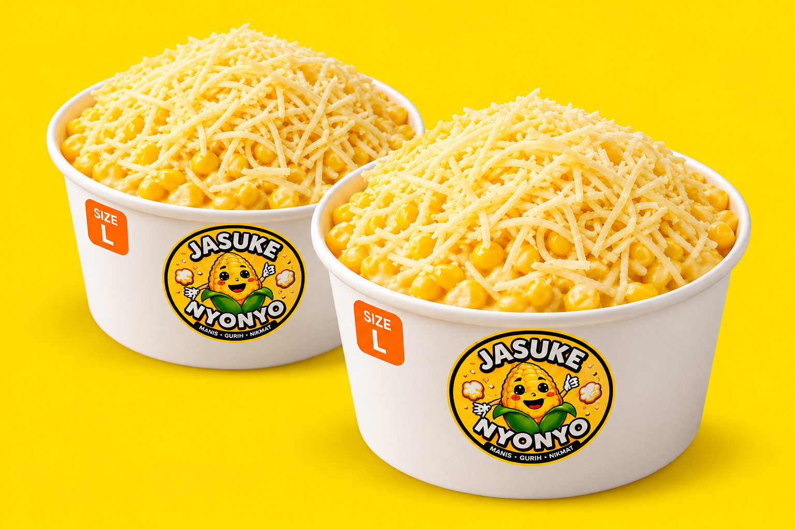

JASUKE NYONYO
Rasakan Kenikmatan Jagung Susu Keju
Tentang Kami
Jasuke Nyonyo merupakan usaha mikro kecil dan menengah yang bergerak di bidang kuliner dengan menyediakan camilan jagung susu keju dan minuman pendamping. Usaha ini mengutamakan rasa, kebersihan, serta pelayanan agar pelanggan dapat menikmati sajian yang lezat dan berkualitas.


Filosofi Jasuke Nyonyo
Jasuke Nyonyo hadir dengan semangat menyajikan camilan sederhana yang lezat, berkualitas, dan terjangkau bagi semua kalangan. Kami percaya bahwa kelezatan tidak hanya berasal dari perpaduan jagung, susu, dan keju, tetapi juga dari kesungguhan dalam memilih bahan, menjaga kebersihan, serta memberikan pelayanan terbaik kepada setiap pelanggan. Melalui cita rasa yang khas dan penyajian yang praktis, kami ingin menghadirkan pengalaman menikmati camilan yang menyenangkan.
Visi Kami
Menjadi usaha mikro, kecil, dan menengah yang dikenal melalui produk jasuke berkualitas, cita rasa yang konsisten, serta pelayanan yang ramah. Kami berkomitmen untuk terus menjaga kualitas bahan baku, meningkatkan proses pengolahan, dan mengembangkan variasi produk agar dapat memenuhi kebutuhan serta kepuasan pelanggan.
Komitmen Kami terhadap Kualitas
Jasuke Nyonyo berkomitmen untuk menjaga kualitas produk melalui pemilihan bahan baku yang baik, penggunaan bahan yang layak konsumsi, serta penerapan kebersihan selama proses pengolahan. Setiap tahapan pembuatan dilakukan dengan memperhatikan kualitas dan kebersihan agar produk yang disajikan tetap lezat, aman, dan sesuai dengan harapan pelanggan. Kami juga terus berupaya meningkatkan kualitas pelayanan dan proses produksi demi menjaga kepercayaan pelanggan.
Tahun Berdiri Hadir sejak 2023 untuk menemani waktu santai dengan sajian jasuke
Varian Menu Jasuke Menghadirkan tiga pilihan menu jasuke untuk dinikmati pelanggan
Pilihan Ukuran Tersedia dalam ukuran kecil dan besar sesuai selera
Nomor Satu di Hati Menghadirkan cita rasa unggulan yang selalu istimewa di hati pelanggan
Proses Pembuatan Jasuke
Proses pembuatan Jasuke Nyonyo dilakukan melalui beberapa tahapan, mulai dari persiapan bahan baku hingga penyajian kepada pelanggan. Setiap tahapan diperhatikan untuk menjaga kebersihan, kualitas bahan, dan cita rasa produk sehingga menghasilkan sajian jasuke yang lezat dan berkualitas.
Persiapan Bahan
Proses Pengolahan
Penyelesaian dan Penyajian
Menu Jasuke Nyonyo
Nikmati berbagai pilihan jasuke dari Jasuke Nyonyo yang memadukan jagung manis dengan bahan pelengkap pilihan. Kami menghadirkan tiga varian menu dengan cita rasa yang nikmat untuk menemani waktu santai Anda.


Struktur Organisasi Jasuke Nyonyo
Struktur organisasi Jasuke Nyonyo terdiri dari pemilik dan tiga bagian utama yang memiliki tugas serta tanggung jawab masing-masing. Pembagian ini bertujuan untuk mendukung kelancaran kegiatan operasional dan pelayanan kepada pelanggan.
Hubungi Kami
Punya pertanyaan atau ingin mengetahui lebih lanjut tentang Jasuke Nyonyo? Hubungi kami melalui informasi kontak berikut atau kirimkan pesan melalui formulir yang tersedia.
Alamat
Jl. Raya Kledokan No. D8, Sleman, Daerah Istimewa Yogyakarta 55281
Telepon
+62 819-3656-2395
jasuketehnyonyo@gmail.com